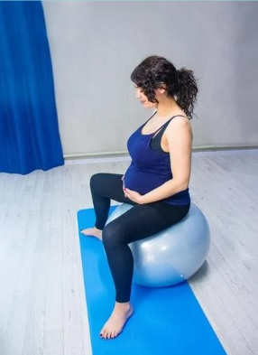

Gimnasia Prenatal
Actividad física guiada y personalizada según el estado físico y la etapa del embarazo de cada mujer. El programa progresa de forma gradual en dificultad e intensidad, con foco en fortalecer los grupos musculares clave del embarazo, mejorar la movilidad y prevenir o disminuir molestias frecuentes como dolor lumbar, pélvico o sensación de pesadez. Puede iniciarse desde la semana 14 de gestación y continuar hasta el final del embarazo.
Duración: 50-60 min